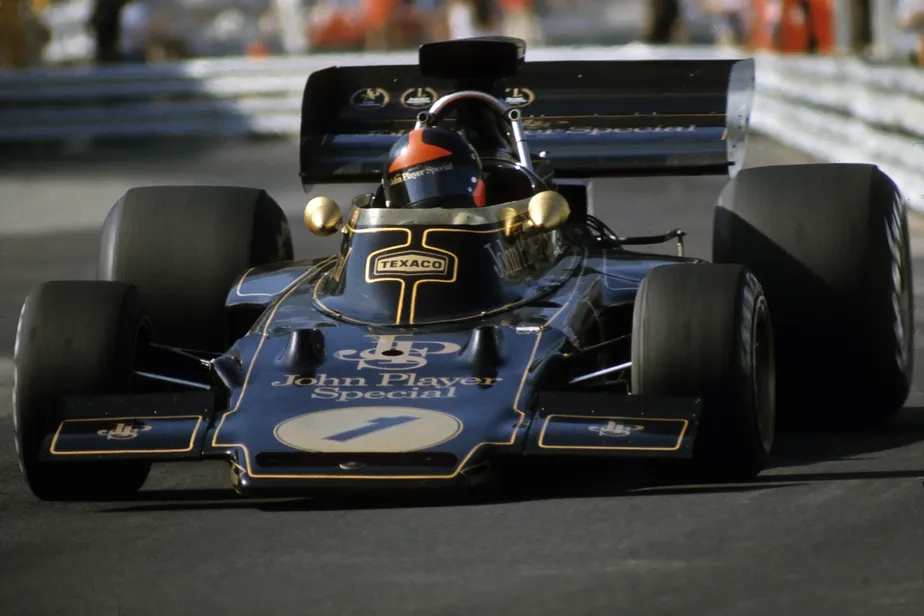
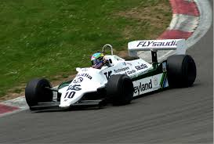
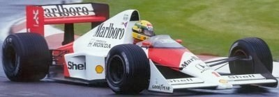
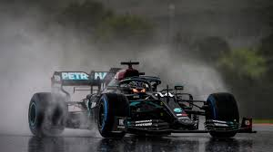

O que é a Fórmula 1?
A Fórmula 1 é a principal categoria do automobilismo mundial, reunindo
as equipes mais avançadas tecnologicamente e os pilotos mais talentosos do mundo.
Criada em 1950, a F1 é conhecida por suas corridas de alta velocidade,
estratégias complexas e constante evolução tecnológica.
Como funciona?
Cada temporada é composta por várias corridas chamadas de "Grandes Prêmios".
Os pilotos acumulam pontos ao longo do campeonato, e ao final,
o piloto e a equipe com mais pontos se tornam campeões.
Por que a F1 é tão importante?
Além de ser um dos esportes mais assistidos do mundo, a Fórmula 1
impulsiona inovações tecnológicas que muitas vezes chegam aos carros
de rua, influenciando diretamente a indústria automotiva.


O Cooper T51/T53 foi um dos carros mais revolucionários da Fórmula 1 no final dos anos 1950 e início dos anos 1960. Ele ficou marcado por popularizar o uso do motor traseiro, uma inovação que mudou completamente o design dos carros da categoria e se tornou padrão nas décadas seguintes.

O Lotus 72 foi um dos carros mais inovadores e bem-sucedidos da Fórmula 1 nos anos 1970. Projetado por Colin Chapman, destacou-se pelo design aerodinâmico avançado, com radiadores laterais e formato em cunha, além de introduzir soluções que influenciaram gerações futuras. Com ele, a Lotus conquistou títulos importantes e marcou uma nova era na engenharia da F1.

O Williams FW07B foi um dos carros mais dominantes do início dos anos 1980. Conhecido pelo uso eficiente do efeito solo (ground effect), oferecia grande estabilidade e velocidade em curvas. Com ele, a Williams consolidou sua força na Fórmula 1, garantindo vitórias importantes e ajudando a equipe a se firmar entre as principais da categoria.

O McLaren MP4/5B foi um dos carros mais icônicos da Fórmula 1 no início dos anos 1990. Equipado com o poderoso motor Honda V10, destacou-se pelo equilíbrio entre desempenho e confiabilidade. Pilotado por Ayrton Senna, o carro foi fundamental na conquista do título mundial de 1990, marcando uma era de grande domínio da McLaren na categoria.

A Ferrari F2000 marcou o início de uma era dominante da Ferrari na Fórmula 1. Pilotada por Michael Schumacher na temporada de 2000, o carro combinava potência, confiabilidade e excelente desempenho aerodinâmico, sendo fundamental para encerrar um jejum de 21 anos sem títulos de pilotos da equipe.

O Red Bull RB6 foi um dos carros mais dominantes da temporada de 2010. Projetado por Adrian Newey, destacou-se pela aerodinâmica extremamente eficiente e alto nível de downforce, garantindo excelente desempenho em curvas. Com ele, Sebastian Vettel conquistou seu primeiro título mundial, marcando o início da era vitoriosa da Red Bull na Fórmula 1.

O AMG F1 W11, da Mercedes, foi um dos carros mais dominantes da história da Fórmula 1. Utilizado na temporada de 2020, destacou-se pelo inovador sistema DAS (Dual Axis Steering) e por sua incrível eficiência aerodinâmica, garantindo múltiplas vitórias e consolidando mais um título para a equipe.